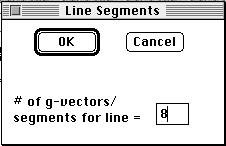
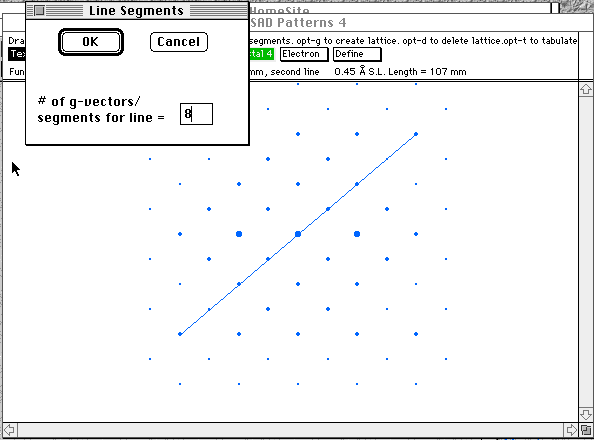

Distributed By: Virtual Labs
Line Segments Dialog Box
PATH: {SAD Object}Exp. Lattice:Lattice Method:Generate Lattice:<After
a line is draw, double clicking on this line will bring up the Line Segments
Dialog Box>
When generating a 2-dimensional lattice using the Lattice Generation Tool,
it is often necessary to set the number of g-vectors contained in the drawn
line. This can be done with the Line Segments dialog box.


In the above situation, to define the experimental lattice, the line
is drawn a length of 8 g-vectors. The user must inform the program of this
situation by typing 8 into the Line Segments dialog box.
To activate the Dialog Box, hold the -shift- key down while clicking
on the line of interest.
Author: J.ames T.
Stanley
 Desktop
Manual:Dialog Boxes
Desktop
Manual:Dialog Boxes
Distributed By: Virtual Labs
Last Updated:1/12/96 Sat, Apr 27, 1996